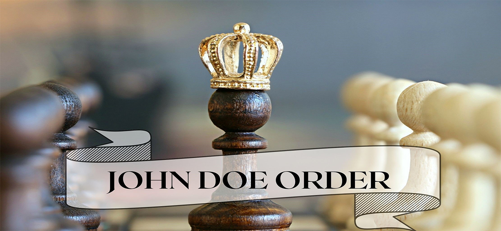

The John Doe order is like a shield for creators' intellectual property rights, especially in cases where the infringers involved are unidentified. This order aims to address the issue of copyright infringement and give creators the power to defend their work. With the John Doe Order, creators can take legal action against individuals who violate their rights, even if their identities are unknown. When something wrong happens, and the perpetrator's identity remains a mystery, the court assigns the placeholder "John Doe" until their identity is revealed. Originating from the UK's Court of Queen’s Bench, this concept gained prominence during the era of globalization, becoming a crucial tool against digital piracy and a means to protect creators' intellectual property rights. Recognized in various countries like the US, Australia, the UK, Canada, and India, this order aims to shield creators' rights and prevent revenue loss by providing protection even when infringers' identities remain elusive. Such orders are typically granted in cases involving copyright and trademark infringement, online piracy, breaches of personal privacy, and the exposure of confidential information. The John Doe order is known by several other names, including Rolling Anton Pillar, Anton Pillar, or Ashok Kumar order. These terms are used interchangeably to refer to similar legal orders that facilitate the protection of rights against unidentified or anonymous parties involved in infringements or violations.This order is requested in situations where there's a risk of piracy or infringement by an unidentified party. It's granted ex-parte because of the urgent nature of the threat and the inability to identify the defendant(s) involved. This remedy is frequently used in legal cases that involve anonymous individuals or entities on the internetor when rampant infringement makes identifying all parties practically impossible.
It's not merely about obtaining initial relief but also about the ongoing commitment of the plaintiff to actively pursue and uphold their rights through the legal system reason being this order necessitates active involvement from the plaintiff, requiring them to periodically renew and actively implement it for ongoing enforcement.
The concept of "John Doe" originated during the rule of England’s King Edward III. It was initially employed in cases involving unidentified defendants, allowing legal actions to proceed even when the specific identities of the defendants were unknown. This specific form of injunction originated from the 1976 ruling by the English Court of Appeal in the case of Anton Piller KG v. Manufacturing Processes Ltd.[1] As an exceptional equitable remedy, this injunction allows the plaintiff to conduct a search and seizure of the infringer's premises. This action is aimed at preserving crucial evidence that might otherwise be destroyed or tampered with.
The initial documented use of the John Doe order occurred in the English legal case of EMI Records Ltd. vs. Kudhail[2] , which took place in 1983. This legal case centered on copyright infringement concerning cassette tapes sold by street traders. In this scenario, the court issued a John Doe order against unidentified individuals linked to the counterfeit brand 'Oak Records', forming part of an identifiable group involved in the infringement.
In India, the regulations concerning aspects like the John Doe Order are governed by the Code of Civil Procedure 1908. Specifically, the John Doe Order is granted under Order 39, Rules 1 and 2 of the Code. This pertains to the court's authority to issue a Temporary Injunction, which is read in conjunction with Section 151 of CPC. Additionally, Part III, Chapter VII of the Specific Relief Act, 1963 addresses matters related to a permanent injunction. It's a powerful tool empowering right holders to take action against unknown infringers, allowing them to serve notices, search premises, and secure evidence.
The legal foundation of the John Doe order in India finds its origins in the 2003 case of Taj Television v. Rajan Mandal.[3] The case concerned the illicit broadcasting of the "Ten Sports" channel by unlicensed cable operators in the absence of any agreements with the plaintiff's marketing partners. Although approximately 1377 cable operators had obtained licenses, several notable operators chose to broadcast the channel without proper approval, bypassing the required agreements. The plaintiff owned the registered broadcasting rights for the Soccer World Cup, in 2002. Unauthorized broadcasting resulted in financial losses for the Plaintiff. In this instance, the court issued an order prohibiting the transmission of the FIFA World Cup by unlicensed cable operators. Additionally, the plaintiff was permitted to search and seize devices belonging to unknown defendants. This pivotal case provided substantial recognition to John Doe orders in India, paving the way for other courts to apply similar principles to safeguard the rights of intellectual property creators.
A parallel adherence to these principles was observed in the case of ESPN Software v. Tudu Enterprises[4]in this case, ESPN Software Pvt. Ltd. claimed exclusive rights as the sole distributor of three pay channels—ESPN, STAR Sports, and STAR Cricket—in India, securing these rights from ESPN STAR Sports to televise all ICC events until 2015. They alleged infringement upon their exclusive broadcasting rights for the 2011 Cricket World Cup by unauthorized cable operators. These operators were unlawfully capturing the plaintiff's sports-related channels and transmitting them despite lacking distribution rights or legal authority. The Court observed that the defendants' unauthorized transmission violated Section 37(3) of the Copyrights Act, 1957. Consequently, the Court issued an injunction against unnamed and undisclosed individuals who might have breached Plaintiff's rights by illegally tapping DTH connections and integrating them into distribution networks. The Court also emphasized the impermissibility of subscribing to channels without a proper license.
From time to time, the conditions required to obtain a John Doe order in India have been clearlyoutlined by various court judgments. The plaintiff must fulfill several fundamentals:
Firstly, comprehensive disclosure by the plaintiff regarding their rights in the work to be protected including how these rights were obtained and anticipated infringements, previous breaches, actions taken, and their outcomes, is mandatory. Additionally, proof of widespread infringement or a credible fear thereof must be presented.Secondly, the plaintiff is necessarily required to establish a strong prima facie case before the Judicial Authority. It's crucial to prove to the court that without the John Doe order, the plaintiff will suffer actual or potential irreparable losses.
Moreover, in "quiatimet" actions, a higher burden exists for the plaintiff. They must demonstrate a reasonable probability that third parties, referred to as John Does, are likely to unlawfully exploit rights exclusively vested with the plaintiff. The Plaintiff is obligated to demonstrate evidence of widespread infringement or a justifiable fear of such actions. Additionally, they must establish that
the circumstances weigh in favor of the plaintiff's position concerning convenience and fairness.The level of proof demanded in such instances is significantly more stringent.
Several Indian court cases exemplify instances where John Doe orders were granted againstcable operators or internet service providers to prevent piracy or unauthorized transmission.
John Doe orders have evolved in response to advancements in law and technology. Initially applied to cases of copyright infringement, counterfeiting, and piracy, these orders have expanded to encompass the protection of personality rights. While successful in safeguarding the rights of intellectual property holders in certain instances, their scope has broadened significantly..
Movie production houses have frequently utilized the remedy of John Doe to prevent unauthorized downloading of movies from the internet or unlawful broadcasting by cable operators without obtaining the necessary licenses.This legal development underlined the practical utilization of the John Doe order within the media domain, signifying its efficacy as a legal instrument in counteracting piracy in the matter of UTV Software Communications Limited v.Home Cable Network Ltd. and Ors.[5] wherein the Delhi High Court, considering that a single broadcast by the defendant could potentially reach hundreds of thousands of households, leading to irreparable losses that couldn't be quantified monetarily, issued a John Doe order against a cable operator. This order was in response to the unlawful airing of pirated versions of the films '7 KhoonMaaf' and 'Thank You'. In the matter of Red Chillies Entertainments Private Limited v. Hathway Cable & Datacom Limited & ors.[6] , The Bombay High Court issued an order at the request of the film's producers, restraining any individual from actions that involve telecasting, broadcasting, distributing, airing on cable TV networks, disseminating, reproducing, or making the film "Happy New Year" accessible to the public. The media industry has extensively utilized John Doe orders in multiple instances to combat film piracy. Notable examples include cases related to films like "Speedy Singhs", "Bodyguard", and "Singham", among others, wherein such orders were employed to prevent unauthorized distribution or broadcasting of these films.
There have been cases where the Court acknowledged the use of a John Doe order to safeguard trademarks. In the case of Ardath Tobacco Company Ltd. vs. Mr. Munna Bhai and Others[7] , an order was issued against unidentified defendants, prohibiting them from producing, vending, storing, or engaging in the trade of cigarettes using packaging materials deceptively similar to those of Plaintiff's brand.
Sandisk Corporation vs. Ramjee & Ors.[8] the Delhi High Court was pleased to provide relief to the Plaintiff, who had filed a suit due to the widespread sale of counterfeit products, which included the exact logo and packaging used by the plaintiff.
The Hon’ble Supreme Court, in the case of LaxmikantV. Patel vs. Chetanbhat Shah and Anr.[9] while examining a plea of passing off and the issuance of an interim injunction, highlighted that adopting or intending to adopt a name already belonging to someone else creates confusion, potentially diverting
customers and clients, resulting in significant harm. Upholding honesty and fair play as fundamental in the business realm, the Court unequivocally stated that an individual can market goods or provide services under a trade name or style that, over time, might garner a reputation or goodwill, becoming a property warranting protection by the Courts.
Likewise, in Luxottica Group Limited vs. Mr. Munny[10], the Delhi High Court restrained unidentified defendants from selling counterfeit optical products bearing the trademark 'RAY-BAN'. In the case of Tata Sky Ltd. (Appellants) vs. Nible TV Inc. and Ors.[11], the defendants showcased the plaintiff's "Tata Sky" logo on their website without permission. This prompted the plaintiff to take swift legal action, alleging passing off—claiming that the unauthorized use of their name misled visitors about the website's true ownership. Consequently, an injunction order was issued against these unknown defendants, likely causing financial harm to the plaintiff's business.
Expanding the Scope John Doe Order in the case of Amitabh Bachchan v. Rajat Nagi and Ors.[12] ,the Delhi High Court, issued a John Doe order to protect personality rights for the first time. This marked another significant advancement in the domain of personality rights within India. The court issued an ad interim in rem (i.e., against the world) injunction against the unauthorized use of his personality and personal attributes such as his voice, name, images, and likeness for commercial use. This was the first blanket John Doe order granted in India for the protection of personality rights.
Subsequently, in a recent development on September 20, 2023, the Delhi High Court issued an interim John Doe order in the case of Anil Kapoor vs. Simply Life India & Ors.[13] This order restrains social media channels, e-commerce websites, and the public from infringing on Anil Kapoor's personality and publicity rights, explicitly forbidding unauthorized use of Kapoor's name, voice, image, or dialogue for commercial purposes.
Due to the inherent nature of the John Doe order, this legal remedy is in the midst of significant discussions and disagreements about how this order should be used. These orders empower authorities to take action against individuals or entities involved in illegal activities, even when their identities are not known. Originating from judicial proactiveness, the precise limits of these orders are challenging to ascertain. Their controversial nature stems from their deviation from a provision in the Civil Procedure Code of 1908, which mandates the identification of defendants. Criticisms include their vague nature and potential infringement on free speech.
The procedures for granting and executing these orders vary depending on the specific cases in which they are issued. Consequently, John Doe orders may introduce various complexities, It is pertinent to note that in the case of The Indian Performing Right Society Ltd v. Mr. Badal Dhar Chowdhry & Others[14] , the Court held that vague/ indefinite injunctions should not be issued.
Furthermore, the absence of a standardized legal framework for Internet Service Providers (ISPs) to adhere to when implementing website blocks based on John Doe orders can lead to authorities exercising discretionary powers excessively. Consequently, it is crucial to reserve the use of such orders for exceptional circumstances where the protection of intellectual property rights outweighs potential impacts on internet freedom and the constitutional rights of ISPs.
John Doe orders were introduced to establish equilibrium between IP rights holders and anonymous infringers. In India, they've served as a proactive and swift remedy, shielding rights owners when the infringers' identities are unknown post an infringement. Despite their expanding reach in contemporary times, challenges persist in their implementation, raising concerns about their effectiveness.
The nascent jurisprudence of John Doe orders in India signifies an evolving landscape. While courts increasingly employ these orders to combat piracy, a more robust approach is necessary, especially concerning internet blocking. The gradual decline of piracy, coupled with the protection of IP owners' rights, will dictate the future relevance of John Doe orders. Balancing judicious grant with the prevention of over-blocking is crucial for sustaining their efficacy in safeguarding intellectual property against unidentified infringers.